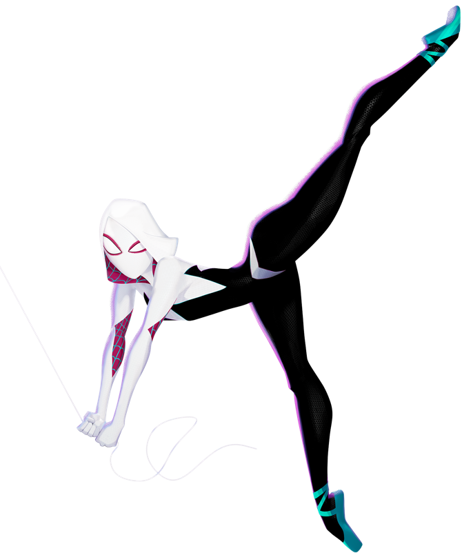

GWEN STACY
Nome completo:
Gwendolyn Maxine Stacy
Codinomes:
Mulher-Aranha, Aranha-Fantasma
Mulher-Aranha (no original, Spider-Woman), popularmente conhecida como Gwen-Aranha (no original, Spider-Gwen) é o alter ego de Gwen Stacy da Terra-65, que assume a identidade de Mulher-Aranha depois de ter sido picada por uma aranha radioativa, é uma personagem fictícia da Marvel Comics que apareceu pela primeira vez na história Edge of Spider-Verse #2 de setembro de 2014. Sua estreia foi excepcionalmente popular, tanto que após, ela passou a estrelar uma série própria chamada Spider-Gwen, que estreou em Fevereiro de 2015. Esta série explora o universo conhecido como Earth-65, uma realidade alternativa onde ao invés de Peter Parker, Gwen Stacy é que foi mordida pela aranha radioativa, tornando-se a Mulher-Aranha de seu mundo.